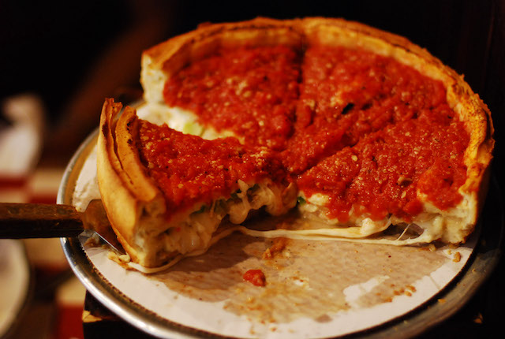

Deep Dish Pizza

Deep Dish Pizza! - Chicago's take on the pizza!
Deep dish pizza is a Chicago-style pizza known for its thick, buttery
crust and piled-high toppings. The crust is pressed into a deep pan,
loaded with cheese, sauce, and toppings, and baked until golden brown and
crispy. It's a filling and satisfying pizza that's perfect for those who
love a hearty slice of pizza.
Ingredients
For the crust
- All-purpose flour
- Cornmeal
- Active dry yeast
- Salt
- Water
- Butter or oil
For the toppings
- Tomato sauce
- Mozzarella cheese (shredded or sliced)
- Meat (such as sausage or pepperoni)
- Vegetables (such as onions, bell peppers, and mushrooms)
-
Additional toppings of your choice (such as olives, garlic, or basil)
Steps
-
In a large mixing bowl, combine the flour, cornmeal, yeast, and salt.
Mix well.
-
Gradually add the warm water and melted butter, stirring with a wooden
spoon or your hands, until the mixture comes together to form a smooth
dough. Knead the dough for a few minutes until it is no longer sticky.
-
Cover the bowl with a damp towel and let the dough rest for about 10
minutes. Preheat the oven to 425°F.
-
In a large mixing bowl, combine the crushed tomatoes, dried basil, dried
oregano, garlic powder, salt, and pepper. Mix well.
-
Grease a deep dish pizza pan (about 14 inches in diameter) with butter
or oil.
-
Press the dough into the bottom and up the sides of the pan, making sure
to cover the entire surface area.
-
Sprinkle the shredded mozzarella cheese over the dough, followed by the
cooked Italian sausage.
-
Pour the tomato sauce mixture over the top of the cheese and sausage,
making sure to spread it evenly.
-
Bake the pizza in the preheated oven for 30-35 minutes, or until the
crust is golden brown and the cheese is melted and bubbly.
- Let the pizza cool for a few minutes before slicing and serving.
- Enjoy your delicious deep dish pizza!!
Home